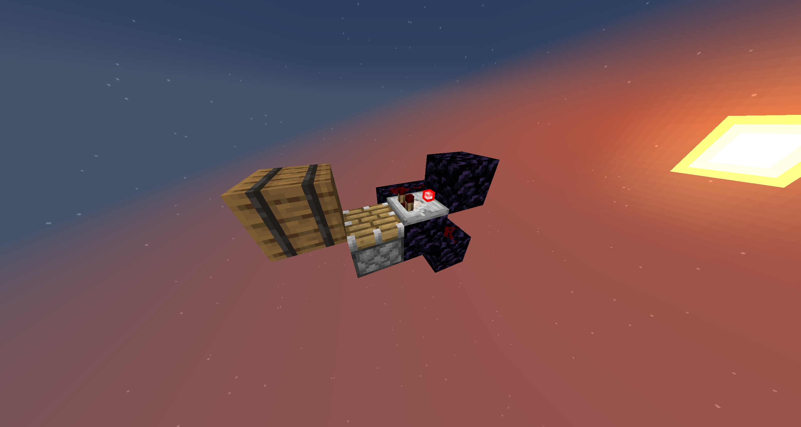

For the farm to function, three conditions (monitored via redstone at specific coordinates) must be met:
- Enderpearl: An enderpearl must be in both of the stasis chambers. (put 2-3 enderpearls in the End stasis chamber for it to be constantly detected)
- Farm Toggle: The farm must be turned on.
- Bone Meal Supply: The system must have sufficient bone meal.
The farm uses the End platform's unique behavior: when an entity travels to the End, blocks within the 5x4x5 platform are broken. This requires chunk loading specific stronghold coordinates and throwing an enderpearl into the chunk-loading stasis chamber.
Custom-designed block pushers convert a horizontal block stream into a vertical one, with a built-in anti-stuck mechanism. Simpler pushers near the End platform lack this anti-stuck feature due to space constraints and potential issues. If they cause problems, update them.

Minecarts beneath the obsidian platform gather items. To access storage, use the maintenance door and descend the ladder to find the chest system.
Does the farm run 24/7?
No, it operates only when the three activation conditions are met, and the stronghold's block-breaking system is loaded (a player with enderpearls in both stasis chambers must be online).
Items aren't being collected from the End platform.
Check for missing or clogged minecarts in the collection system.
The End platform is full of blocks!
Verify the stronghold block-breaking system. Ensure a snowman attacks silverfish and the stasis chamber's enderpearl is intact.
The redstone is damaged, and I can't identify the issue.
Report it as grief and request a rollback.
Why is the farm slow?
Currently, the farm uses only one bone meal source, which may not sustain operation. If bone meal runs low, please pause the farm, otherwise it's gonna waste bonemeal, thank you.
Where is the stronghold
If you wish to be added to the beacon with the stronghold, message me on discord @uxiii | Uxiii#5454